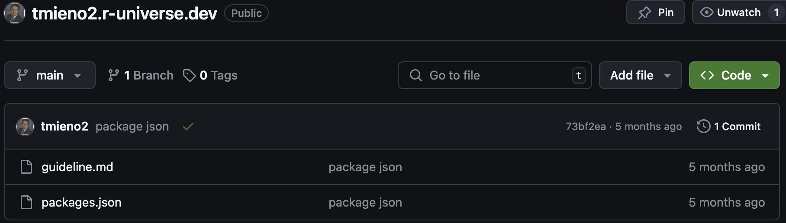
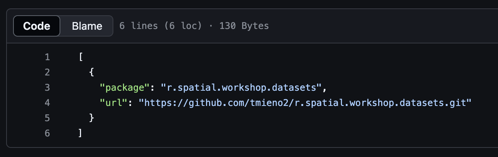
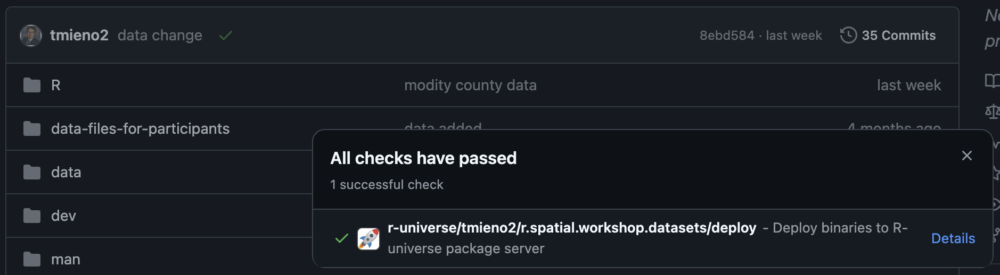

A Minimal Introduction to Using External Datasets with webr in Quarto-generated Outputs
webr sessions in documents created by Quarto.
1 Motivation and Objectives
webr allows you to run R directly in your web browser, making it particularly valuable for teaching. Instructors can demonstrate R code seamlessly within their lecture notes, eliminating the need to switch between slides and RStudio. Students can also work on exercises within the lecture slides, focusing entirely on problem-solving without concerns about having the correct R objects or packages installed on their local machines1.
While you can use datasets that are part of an R package easily on an webr session, you would need to take extra steps to use external datasets like your own datasets (see here). The goal of this blog post is to provide a step-by-step guide on how to set up R data packages on R-universe to use external datasets for the webr sessions in documents created by Quarto.
Those who would like to use your own datasets in webr sessions.
In this blog post, I assume you are comfortable with version control with git and Github. However, no prior experience in creating an R package is necessary. Indeed, those who have never built an R package benefits the most from this blog post.
2 Steps
Here are the major steps to take before you can use external datasets in webr sessions, with each of the steps consisting of smaller tasks.
- Create an R data package
- Host the package on R-universe
- Install the package on
webrsessions inside a Quarto document
2.1 Prepare an R data package
In this section, we introduce a method for creating an R dataset package—one that includes only datasets, similar to the nycflights13 package. The aim is not to create a CRAN-approvable package but rather to develop a minimal viable R package that can be used in webr sessions.
- Clone this repository to your local computer. This repository is a modified version of the RStudio project when you initiate a new RStudio project for an R package by navigate through New Project… -> New Directory -> R Package on RStudio. Here are the modifications:
- hello.R in the R folder and hello.Rd in the man are removed
- data.R is added in the R folder
- data-raw folder is created, and then gen_data.qmd and sample_data.csv are created inside it
- dev folder is created, and then dev.qmd is created inside it
^data-raw$and^dev$are added to .Rbuildignore
- Open the cloned folder in RStudio, locate and open dev.qmd, and follow the instructions. These will guide you through:
- Creating datasets for the data package
- Writing descriptions for the datasets
- Generating documentation of the dataset
- Verifying that the datasets are accessible after the package is installed
By the end, you will have a functional R data package.
As long as you follow the instructions, you should be able to clear the CRAN check (though it is not necessary as we are not submitting this package to CRAN):
- Create a new repository on Github for this package and push the project folder to your Github account.
2.2 Set up R-universe
I basically follow the instruction provided here to set up one’s own universe, but with some visual aids.
- Create a Github repository named
your-username.r-unievrse.dev. For me this would betmieno2.r-unievrse.devas my Github account name istmieno2.

- Clone the repository and create a file called packages.json. Inside the file, you specify the name of the package and the url of the Github repository that hosts the package like below:
[
{
"package": "package name 1",
"url": "ulr of the Github repository 1"
},
{
"package": "package name 2",
"url": "ulr of the Github repository 2"
},
]In my case, it looks like below:

I have only one package on R-universe called r.spatial.workshop.datasets, which is hosted at https://github.com/tmieno2/r.spatial.workshop.datasets.git.
Install the r-universe app on your Github account by clicking on here.
Wait until your package is built and hosted at your r-universe page https://your-username.r-universe.dev (e.g., https://tmieno2.r-universe.dev for me). Click on the little green check mark next to the most recent commit message and you will see a green check mark to the r-universe icon when the package is done building like below.

2.3 Install the package on webr sessions inside a Quarto document
Now that the data package is on R-universe, you can easily use it in your webr sessions. I am currently using quarto-webr extension (see here for installation and here for how use use it in a Quarto document).
Please note that, each time a document with webr session is opened, a data package needs to be installed to use its datasets. This can be easily done by including a code like below at the beginning of the qmd file.
```{webr-r}
#| context: setup
install.packages(
"package name",
repos = "https://your-account-name.r-universe.dev"
)
data(dataset-name)
```For example, the following code will install the r.spatial.workshop.datasets package and load NIR dataset. #| context: setup is used her because users do not have to see the code. But, of course, you can show the codes as well if you wish.
```{webr-r}
#| context: setup
install.packages(
"r.spatial.workshop.datasets",
repos = "https://tmieno2.r-universe.dev"
)
data(NIR)
```If you want to see this in action, you can visit here and you can look at lines 84-96 of L01_vector_basics.qmd.
Footnotes
However, it’s important to note that having students work on their own computers offers value, as setting up their environment, including installing packages, is an essential part of the learning process.↩︎